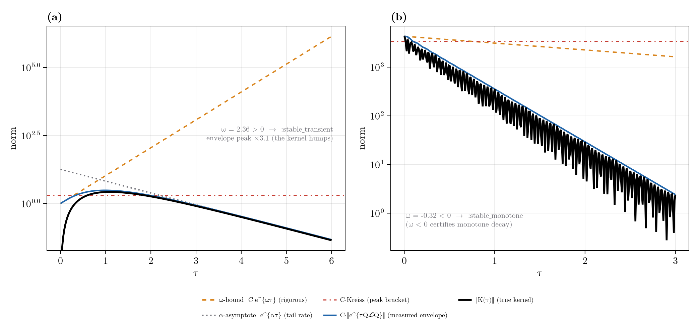

Nakajima-Zwanzig Formalism
The Nakajima-Zwanzig (NZ) formalism produces the exact closed equation of motion for a chosen part of a system's state, expressed through a projection superoperator. It is the formal setting for grade truncation and the reachable-basis restriction: both are choices of projector, and the operator this package calls the leakage is one factor of the NZ memory kernel. The first three sections develop the theory; the last two give the correspondence with the code.
Projection Superoperators
Choose a superoperator $\mathcal{P}$ that projects Liouville space onto the part of the state to retain, with complement $\mathcal{Q}=\mathbb{1}-\mathcal{P}$. A projector satisfies
\[\mathcal{P}^2 = \mathcal{P}, \qquad \mathcal{Q}^2 = \mathcal{Q}, \qquad \mathcal{P}\mathcal{Q} = \mathcal{Q}\mathcal{P} = 0, \qquad \mathcal{P} + \mathcal{Q} = \mathbb{1}.\]
The retained and discarded parts of the state are $\rho_{\mathcal P}\equiv\mathcal{P}\rho$ and $\rho_{\mathcal Q}\equiv\mathcal{Q}\rho$, so $\rho=\rho_{\mathcal P}+\rho_{\mathcal Q}$. In the standard open-systems application $\mathcal{P}$ projects onto a reference bath state; here it projects onto a set of retained Pauli strings, either those of grade at most $k_{\max}$ or a generator-closed reachable set.
Deriving the Exact Closed Equation
Begin from the Liouville-von Neumann equation $\dot\rho=\mathcal{L}\rho$ and apply $\mathcal{P}$ and $\mathcal{Q}$, inserting $\mathbb{1}=\mathcal{P}+\mathcal{Q}$ after the generator. This gives two coupled equations,
\[\dot\rho_{\mathcal P} = \mathcal{P}\mathcal{L}\mathcal{P}\,\rho_{\mathcal P} + \mathcal{P}\mathcal{L}\mathcal{Q}\,\rho_{\mathcal Q},\]
\[\dot\rho_{\mathcal Q} = \mathcal{Q}\mathcal{L}\mathcal{P}\,\rho_{\mathcal P} + \mathcal{Q}\mathcal{L}\mathcal{Q}\,\rho_{\mathcal Q},\]
in which the diagonal terms evolve each part within its own subspace and the off-diagonal terms $\mathcal{P}\mathcal{L}\mathcal{Q}$ and $\mathcal{Q}\mathcal{L}\mathcal{P}$ couple them. The second equation is linear and inhomogeneous in $\rho_{\mathcal Q}$ with source $\mathcal{Q}\mathcal{L}\mathcal{P}\,\rho_{\mathcal P}(t)$. Solving it by variation of constants, with the propagator $e^{\mathcal{Q}\mathcal{L}\mathcal{Q}\,\tau}$ generated within the discarded subspace,
\[\rho_{\mathcal Q}(t) = e^{\mathcal{Q}\mathcal{L}\mathcal{Q}\,t}\,\rho_{\mathcal Q}(0) + \int_0^{t} e^{\mathcal{Q}\mathcal{L}\mathcal{Q}\,(t-s)}\, \mathcal{Q}\mathcal{L}\mathcal{P}\,\rho_{\mathcal P}(s)\,ds .\]
Substituting this into the $\rho_{\mathcal P}$ equation removes $\rho_{\mathcal Q}$ and yields the Nakajima-Zwanzig generalized master equation, exact and closed in the retained part:
\[\dot\rho_{\mathcal P}(t) = \mathcal{P}\mathcal{L}\mathcal{P}\,\rho_{\mathcal P}(t) + \int_0^{t}\!\mathcal{K}(t-s)\,\rho_{\mathcal P}(s)\,ds + \mathcal{P}\mathcal{L}\,e^{\mathcal{Q}\mathcal{L}\mathcal{Q}\,t}\,\rho_{\mathcal Q}(0),\]
with the memory kernel
\[\mathcal{K}(\tau) = \mathcal{P}\mathcal{L}\mathcal{Q}\; e^{\mathcal{Q}\mathcal{L}\mathcal{Q}\,\tau}\; \mathcal{Q}\mathcal{L}\mathcal{P} .\]
The three terms are, in order:
- Retained evolution $\mathcal{P}\mathcal{L}\mathcal{P}\,\rho_{\mathcal P}$ within the kept subspace.
- A convolution over the past through the kernel $\mathcal{K}$, which sends the state into the discarded subspace, evolves it there for a time $\tau$, and returns it, making the retained dynamics non-Markovian.
- An initial slip, the inhomogeneous transient from any amplitude initially outside $\mathcal{P}$, which vanishes when $\rho_{\mathcal Q}(0)=0$.
Markovian and Time-Convolutionless Limits
If the kernel decays on a correlation time short compared with the evolution of $\rho_{\mathcal P}$, the history integral localises in time,
\[\int_0^{t}\!\mathcal{K}(t-s)\,\rho_{\mathcal P}(s)\,ds \;\approx\; \Big(\!\int_0^{\infty}\!\mathcal{K}(\tau)\,d\tau\Big)\,\rho_{\mathcal P}(t),\]
the Markovian limit; truncating the kernel at second order in the $\mathcal{P}$-$\mathcal{Q}$ coupling (the Born approximation) recovers the Redfield and Lindblad dissipators. The kernel decays with the spectrum of $\mathcal{Q}\mathcal{L}\mathcal{Q}$, so this limit holds exactly when the discarded subspace is stable, which is the detectability and stabilizability of the dropped modes in Reachability, Control, and the Adaptive Basis.
Because $\mathcal{Q}\mathcal{L}\mathcal{Q}$ is non-normal, "stable" here means more than a negative spectral abscissa: $e^{\mathcal{Q}\mathcal{L}\mathcal{Q}\,\tau}$ can amplify transiently before it decays, and while that transient lasts the kernel is not short. The right test is therefore the transient envelope $\lVert e^{\mathcal{Q}\mathcal{L}\mathcal{Q}\,\tau}\rVert$ and the kernel norm $\lVert\mathcal{K}(\tau)\rVert$ themselves; the eigenvalues alone miss the transient. stabilizable / detectable at level = :transient report exactly these: the numerical abscissa ($\omega<0$ certifies monotone decay, no transient), the two-sided Kreiss bracket (RestrictedSpinDynamics.Spectral.kreiss_bracket, enclosing $\sup_\tau\lVert e^{\mathcal{Q}\mathcal{L}\mathcal{Q}\,\tau}\rVert$ between its lower and upper bounds), the measured envelope (RestrictedSpinDynamics.Spectral.transient_bound), and the kernel peak and integral $\int_0^\infty\lVert\mathcal{K}(\tau)\rVert\,d\tau$, a direct measure of how much the discarded subspace leaks back before it relaxes.

(a) On the engineered block the kernel grows transiently to 3.1x before decaying; the numerical abscissa $\omega>0$ and the Kreiss bracket bound the hump that the spectral abscissa alone would miss (:stable_transient). (b) On the physical grade-1 | grade-2 kernel of a collectively-decaying spin system the numerical abscissa $\omega<0$ certifies monotone decay (:stable_monotone). These are the meters behind the :memory-versus-:markov tier choice in Multigrade Tiering. A complementary exact rewriting, the time-convolutionless form, expresses $\rho_{\mathcal Q}(t)$ through $\rho_{\mathcal P}(t)$ rather than its history and produces a time-local generator
\[\dot\rho_{\mathcal P}(t) = \mathcal{G}(t)\,\rho_{\mathcal P}(t),\]
with no convolution: the same content reorganised, and the natural language for a time-dependent generator. It is also the setting for a state-dependent (feedback) generator, which the projection reaches through its linearization (see Reachability, Control, and the Adaptive Basis).
Exactness of Grade Truncation
Grade truncation propagates only the first term of the generalized master equation, discarding the memory kernel and the initial slip. This is exact precisely when the kernel vanishes, which by the form of $\mathcal{K}$ holds if and only if no flow crosses the boundary, $\mathcal{Q}\mathcal{L}\mathcal{P} = 0$. A generator-closed keep-set (a reachable_basis, certified by keepset_leakage) satisfies the same condition. This is the exactness floor; its derivation, the closing-grade table, and the leakage_block certificate are in The Exactness Floor.
The Kernel as the Error
When $\mathcal{Q}\mathcal{L}\mathcal{P}\neq 0$ the discarded kernel is the error. Its magnitude along the actual trajectory, weighted by the current state, is
\[\Phi(t) = \lVert \mathcal{Q}\mathcal{L}\,\rho(t)\rVert ,\]
a per-run indicator, in contrast to the worst-case operator norm $\lVert \mathcal{Q}\mathcal{L}\mathcal{P}\rVert$. For a specific observable $O$, a discarded string contributes to $\langle O(t)\rangle$ only if it lies on a path from the initial support to $O$ (the forward-reachable set intersected with the set backward-reachable from $O$), and to first order the induced error is bounded by a sum over discarded strings of the forward amplitude $a_i$ times the adjoint sensitivity $s_i$,
\[\bigl|\delta\langle O\rangle\bigr| \lesssim \sum_{i\in\mathrm{discarded}} a_i\, s_i .\]
The state-weighted flow and the observable-aware bound are the meters and the dual criterion of the truncation tools:
Phi = leakage_flow(m, c) # state-weighted boundary flow at state c
z = zero_track_elimination(b, H, c0, ts; observables = obs) # reports both meters; dual criterion uses a_i s_iSee Reachability, Control, and the Adaptive Basis for the reachability and pruning machinery this bounds.
Reduced Dynamics: Effective Generator and Memory Kernel
Beyond bounding the error, the projection also runs forwards as a reduction. effective_liouvillian builds the Markovian ($s=0$) limit of the generalized master equation on a kept sub-basis: the Schur complement
\[\mathcal{L}_{\mathrm{eff}} = \mathcal{P}\mathcal{L}\mathcal{P} - \mathcal{P}\mathcal{L}\mathcal{Q}\,(\mathcal{Q}\mathcal{L}\mathcal{Q})^{-1}\,\mathcal{Q}\mathcal{L}\mathcal{P} = \mathcal{P}\mathcal{L}\mathcal{P} + \tilde{\mathcal{K}}(0),\]
adiabatically eliminating the fast complement, exact for the stationary and slow dynamics (the $P$-part of the full stationary state is annihilated by $\mathcal{L}_{\mathrm{eff}}$).
The full non-Markovian kernel is propagated by memory_kernel. Because the restricted Liouvillian is finite-dimensional, the Laplace-domain kernel
\[\tilde{\mathcal{K}}(s) = \mathcal{P}\mathcal{L}\mathcal{Q}\,(s - \mathcal{Q}\mathcal{L}\mathcal{Q})^{-1}\,\mathcal{Q}\mathcal{L}\mathcal{P}\]
is exactly rational, with poles at the eigenvalues of $\mathcal{Q}\mathcal{L}\mathcal{Q}$. The route memory_kernel takes: (1) partition into the $P$/$Q$ sub-blocks, as effective_liouvillian does; (2) read the pole/residue form of $\tilde{\mathcal{K}}(s)$ by diagonalizing (or block-Schur, guarding non-normality with the Spectral (Contour) eigstructure / petermann_factor tools) $\mathcal{Q}\mathcal{L}\mathcal{Q}$, exact with all poles, or reduced to the dominant (slowest, largest-residue) ones; (3) embed each retained pole as one auxiliary memory block, the same local embedding the post-Markovian pome uses for its single exponential mode; and (4) step the enlarged generator with the ordinary propagate expv stepper, no new time-stepping machinery. A contour-Laplace (Bromwich) inversion of $[\,s - \mathcal{P}\mathcal{L}\mathcal{P} - \tilde{\mathcal{K}}(s)\,]^{-1}$, built from the Spectral resolvent quadrature, is the independent correctness check, and effective_liouvillian is the single-term (pole-free) limit of this construction.
The time-convolutionless alternative (tcl_generator, Breuer & Petruccione Ch. 9.2) trades the memory convolution for a compact time-LOCAL generator $K(t) = \mathcal{P}\mathcal{L}\mathcal{P} + \mathcal{P}\mathcal{L}\mathcal{Q}\,M(t)\,\mathcal{Q}\mathcal{L}\mathcal{P}$, $M(t) = \int_0^t e^{\mathcal{Q}\mathcal{L}\mathcal{Q} s}\,ds$, on the kept subspace alone, no pseudomode embedding. It interpolates $K(0) = \mathcal{P}\mathcal{L}\mathcal{P}$ and $K(\infty) =$ effective_liouvillian. To second order in the coupling it is accurate for weak leakage, but at strong coupling it shows the characteristic TCL breakdown (the generator turns unstable and the propagation diverges) where the exact memory_kernel should be used instead.
All three share the same (basis, L, kept) call and the same P/Q partition (keep a grade-1 sub-basis, eliminate the grade-2 complement):
julia> using RestrictedSpinDynamics
julia> b = restricted_basis(2, 2);
julia> L = build_liouvillian(b, hamiltonian(jcoupling(2, 1, 2, 5.0)); jumps = decay(2, 1:2, 0.7));
julia> kept = restricted_basis(2, 1); # keep grade 1, eliminate grade 2
julia> eff = effective_liouvillian(b, L, kept); # Markovian (s=0) Schur fold
julia> (length(eff.basis), size(eff.L))
(7, (7, 7))
julia> mk = memory_kernel(b, L, kept); # exact non-Markovian: one block per pole of QLQ
julia> (mk.nP, length(mk.poles))
(7, 9)
julia> tcl_generator(b, L, kept).nP # time-local TCL2 on the kept subspace
7Each returns something propagate steps directly (eff.L, the MemoryKernel, the TCLGenerator), so swapping reductions is a one-line change in the propagation call.
Strong-Coupling Strategy
Strong coupling inverts the usual accuracy-cost tradeoff. One expects a strongly coupled complement to demand the exact memory kernel; when that complement is also fast, the opposite holds. The cheap Markovian reductions become both the more accurate and the better-conditioned choice, and the exact kernel is the one that turns stiff.
Write $\Gamma$ for the decay rate of the discarded subspace (the spectral-abscissa magnitude of $\mathcal{Q}\mathcal{L}\mathcal{Q}$) and $J$ for the coherent coupling that mixes it with the retained part (the scale of the boundary operator $\mathcal{Q}\mathcal{L}\mathcal{P}$). In the spin example that threads this guide, $\Gamma$ is the bath spin's decay rate and $J$ its scalar coupling to the retained spin. Their ratio $J/\Gamma$ is the Born-Markov smallness parameter, and the strong-coupling regime is a fast complement, $J/\Gamma \ll 1$.
There the Markovian and adiabatic reductions are expansions in $J/\Gamma$, so they grow more accurate as $\Gamma$ rises, and the generators they fold stay small and well-conditioned. The full and exact-memory generators instead turn stiff, their eigenvalues spanning $\Gamma$ down to the motionally-narrowed $J^2/\Gamma$, which strains the expv stepper and forces its dense $\exp$ fallback. The cheap reductions are the accurate and the comfortable choice at once. Reach for them in this order:
effective_liouvillianis the $\Gamma \to \infty$ limit by construction (the $s=0$ Schur fold), so it is accurate exactly when the complement is fast, and its $\mathcal{L}_{\mathrm{eff}}$ is a small, non-stiff superoperator.adiabatic_eliminationis the Hilbert-space companion. It folds a fast-decaying manifold rather than a grade block, inverting the no-jump Hamiltonianno_jump_hamiltonianon that manifold to second order in the coupling.space = :hilbertreturns a composable GKSL $(H, \mathrm{jumps})$;space = :liouvillereturns the exact-Markovian superoperator. In a timescale-separated system its error falls the fastest with $J/\Gamma$, making it the most accurate non-exact option.memory_kernelstays exact, but its pseudomode embedding places poles at the fast $\mathcal{Q}\mathcal{L}\mathcal{Q}$ eigenvalues, so the enlarged generator is stiff and the Krylovexpvstep can fail on it. Propagate it densely ($\exp(\mathcal{M}t)$; the blocks are small once the complement is folded) or keep only the dominant poles when the exact curve is needed at strong coupling.tcl_generator: avoid here. The time-local second-order generator goes unstable in exactly this regime (the TCL breakdown noted above).
Two regime-specific caveats follow from motional narrowing. The induced retained rate scales as $J^2/\Gamma$ and so decreases as the complement gets faster, which makes the retained dynamics long-lived at strong coupling. First, a reduction's small error in that rate or amplitude then accumulates over the longer window, so the late-time error can grow with $\Gamma$ even while the transient (peak) error shrinks. Second, the Markovian reductions drop $\rho_{\mathcal Q}(0)$, and the resulting slow-mode amplitude offset now persists for the full long lifetime; seed it with complement0 on memory_kernel when it matters, or accept the offset. Only the exact kernel is immune to both, which is precisely when its stiffness is most inconvenient.
Multigrade Tiering
effective_liouvillian (Markovian, $s=0$) and memory_kernel (full memory) are the two extremes of a single choice applied to the whole complement. But the complement is itself graded, and because the Liouvillian is grade-banded (two-spin couplings shift the correlation order by $\le 1$, dissipators by $\le 2$) it can be peeled shell by shell from the outermost grade inward. Each shell can take a different tier (kept exact, kept with memory, folded in Markovian-ly, or dropped) and grade_tiers chooses them automatically from per-shell figures of merit, with grade_reduce assembling the result ($=$ effective_liouvillian on the Markovian shells $\circ$ memory_kernel on the memory shells).
For shell $g$ with block $\mathcal{L}_{gg}$ and inner retained space $S$ (grades $< g$), define:
- Relevance $w_g = \lVert \mathcal{L}_{Sg}\,\mathcal{L}_{gg}^{-1}\,\mathcal{L}_{gS} \rVert / \lVert \mathcal{L}_{SS}\rVert$, the normalized $s=0$ Schur-return weight (the second-order Schrieffer-Wolff smallness parameter $\sim \lVert\text{coupling}\rVert^2/(\text{gap}\cdot\text{inner rate})$). Small $w_g$ $\Rightarrow$ the shell barely affects the kept dynamics even at Markovian order $\Rightarrow$ drop.
- Non-Markovianity index $\eta_g = \gamma_{\mathrm{ref}}/\lvert\alpha_g\rvert$, the Born-Markov small parameter, the ratio of the shell memory time $\tau_g = 1/\lvert\alpha_g\rvert$ ($\alpha_g$ the shell spectral abscissa) to the system timescale $1/\gamma_{\mathrm{ref}}$ ($\gamma_{\mathrm{ref}}$ the fastest core mode). With the non-normal correction $\eta_g\,T_g$ ($T_g$ the shell transient peak), $\eta_g T_g \ll 1 \Rightarrow$ the shell relaxes fast on the kept timescale $\Rightarrow$ Markovian is accurate; otherwise keep memory.
- Guards: $\alpha_g \ge 0$ (an undamped mode) forces exact; $\omega_g \ge 0$ or a large $T_g$ (strong non-normality, the $s=0$ proxy unreliable) forces memory. Here $\omega_g$ is the shell numerical abscissa and $T_g$ its
RestrictedSpinDynamics.Spectral.transient_boundpeak.
Normalizing each $w_g$ by the total complement weight makes the single knob err_tol a dimensionless fraction of the complement's influence: peeling outward-in, each shell takes the coarsest admissible tier (drop $<$ Markovian $<$ memory $<$ exact in cost) that keeps the running budget below err_tol, yielding three cutoffs $k_{\text{exact}} \le k_{\text{memory}} \le k_{\text{markov}}$. The budget err_est is a monotone indicator of the observable error, not a strict bound (static operator-norm proxies cannot bound a trajectory tightly); err_tol\to 0recovers the full dynamics exactly, and the scale is calibrated per system by comparing [grade_reduce`](@ref) against the full run.
An initial state that populates the memory region is handled by the Nakajima-Zwanzig inhomogeneity $I(t) = \mathcal{P}\mathcal{L}\mathcal{Q}\,e^{\mathcal{Q}\mathcal{L}\mathcal{Q} t}\,\rho_Q(0)$ (Breuer & Petruccione, Ch. 9): in the pole embedding it is one extra scalar mode per pole, $\dot p_j = \lambda_j p_j$, seeded at $p_j(0) = u_j^{\mathsf T}\rho_Q(0)$ and fed to $\rho_P$ through $\mathcal{P}\mathcal{L}\mathcal{Q} v_j$, activated by passing complement0 to propagate. So $\rho_Q(0)=0$ is not required: only population in the Markovian/dropped region (which has no memory modes) is lost, so the exact core need only cover what is read (the observables), not the full initial support.
With a localized seed and a grade-1 observable, the exact core is just grades 0-1 and the complement peels into the memory tier automatically:
julia> using RestrictedSpinDynamics
julia> H = hamiltonian(zeeman(3, [0.0, 1.0, 2.0]), jcoupling(3, 1, 2, 5.0), jcoupling(3, 2, 3, 5.0));
julia> b = restricted_basis(3, 3);
julia> c0 = state(b, polarized([1], :z)); # localized, low-grade seed
julia> obs = Dict("Iz1" => spin_op(3, 1, 3)); # grade-1 observable sets the exact core
julia> t = grade_tiers(3, 3, H, (b, c0); jumps = decay(3, 1:3, 0.8), observables = obs);
julia> t.tiers # grade 0..3: exact core, complement -> memory
4-element Vector{Symbol}:
:exact
:exact
:memory
:memory
julia> grade_reduce(3, 3, H, (b, c0); jumps = decay(3, 1:3, 0.8), observables = obs) isa MemoryKernel
trueTightening err_tol grows the exact core (toward the full dynamics); loosening it lets more shells fold Markovian-ly or drop. Calibrate it by comparing grade_reduce against a full-basis run on a short window.
Relation to Relaxation Theory
Applying the same split to a bath rather than a grade cap is the standard derivation of the relaxation backends: take $\mathcal{P}$ the projector onto the system and a reference bath state, expand the kernel to second order (Born) and localise it in time (Markov), and it becomes the Redfield or Lindblad dissipator; retaining the kernel to all orders for a classical bath is the stochastic-Liouville route. Relaxation Backends presents that construction from the bath side; this is the same algebra from the truncation side.